Design & Fabrication of a Mechanized Cashew Nut Cracking Machine
Final-year Agricultural & Environmental Engineering project, Federal University of Technology, Akure (FUTA) — 2024–2025. A collaborative three-person team; John's individual contribution was structural design of the cracker.
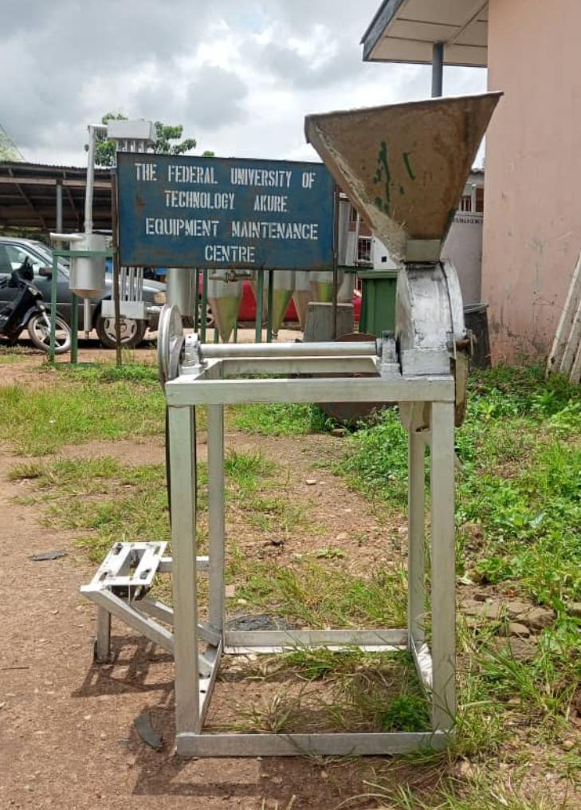
Project Overview
This final-year Agricultural & Environmental Engineering project developed an impact-based mechanized cashew nut cracker for small-scale cashew processing. The machine was designed, fabricated, and tested by a three-person team at the Federal University of Technology, Akure (FUTA) during 2024–2025.
Problem Statement
Cashew processing requires a way to open the hard shell while preserving as much of the kernel as possible. This project addressed that processing need with a mechanized cracker intended for small-scale use.
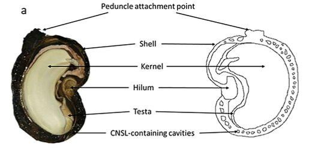
Aim & Objectives
The aim was to design and fabricate an impact-based mechanized cashew nut cracking machine. The project objectives were to develop the cracker, fabricate it with locally available materials and conventional processes, and evaluate its performance under different roasting or pre-treatment conditions.
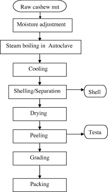
Design Concept
The machine uses impact to crack cashew shells. A 4–6 HP internal-combustion engine drives the cracking mechanism, with a reported disc speed of 716 RPM. The concept was sized for small-scale cashew processing rather than industrial production.
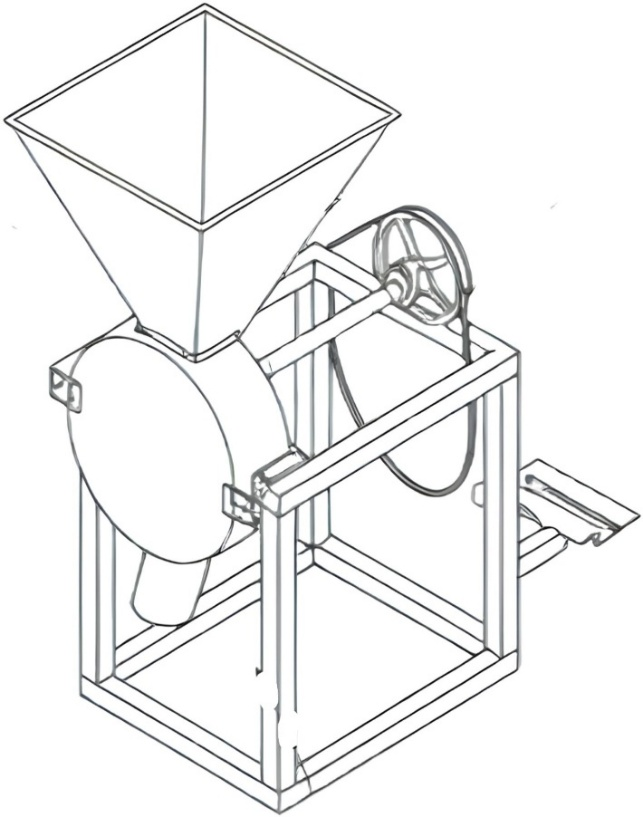
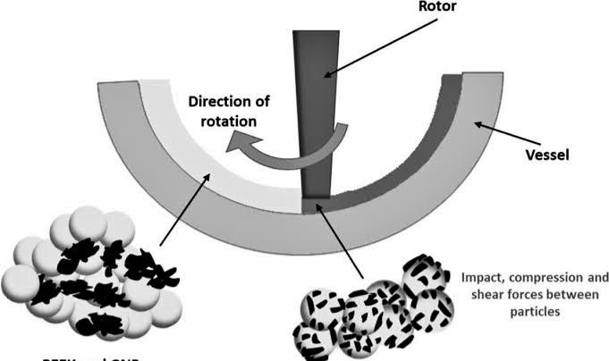
Machine Components
The verified project description identifies the internal-combustion engine and the cracking disc as core machine elements. The broader machine assembly was fabricated from locally available materials. A complete component-by-component inventory is not available in the public project materials used for this page.
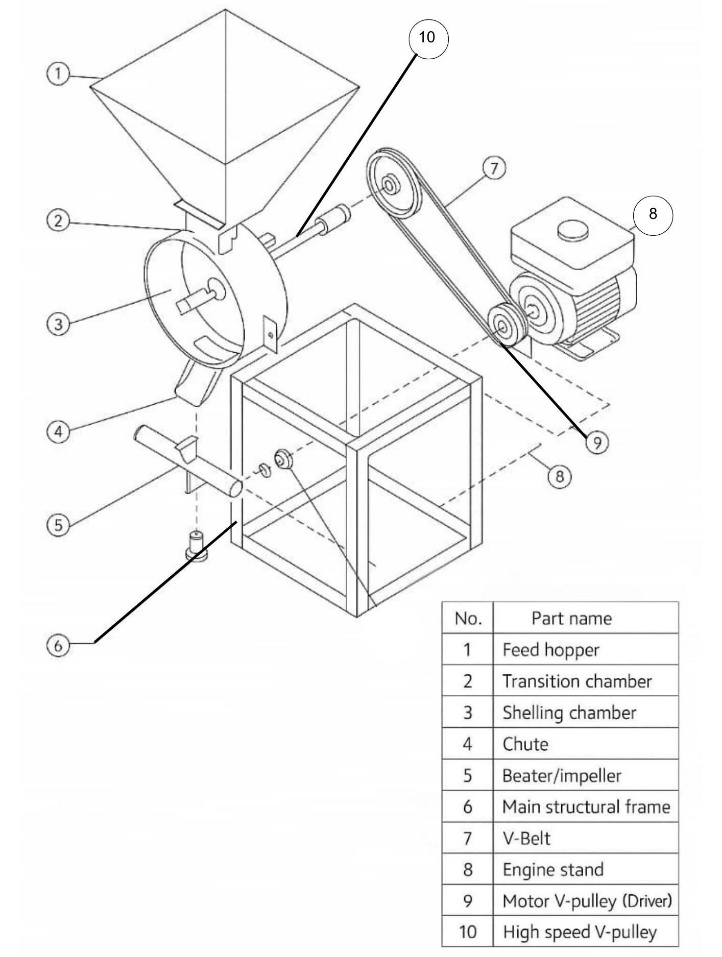
Engineering & Design Parameters
- Engine: 4–6 HP internal-combustion engine
- Disc speed: 716 RPM
- Reported impact force: 3,750 N
- Reported power requirement: 1.8 kW
- Intended scale: small-scale cashew processing
These are project-specific reported values. They are not presented as universal design standards or industry benchmarks.
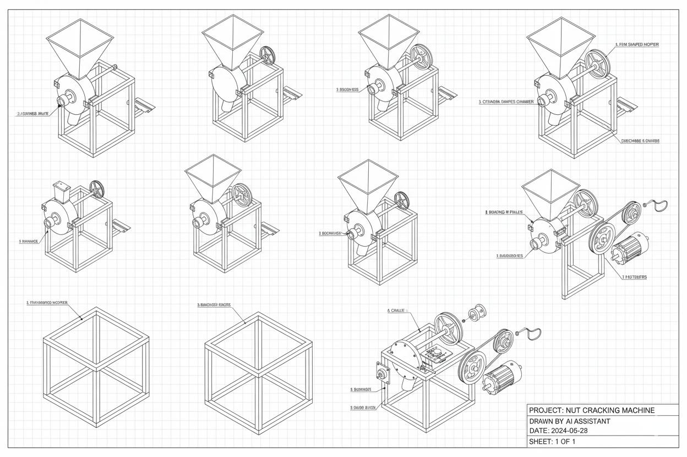
Fabrication Process
Fabrication used locally available materials and conventional processes. The team jointly resourced construction of the machine. Detailed drawings, exact dimensions, and a complete step-by-step workshop record are not available in the source material used for this portfolio page.
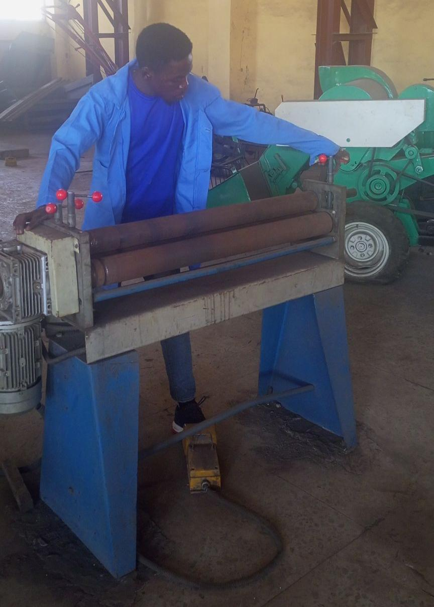
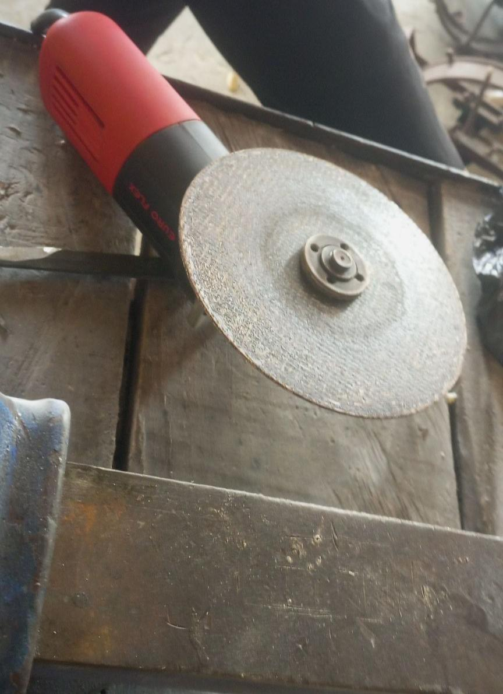
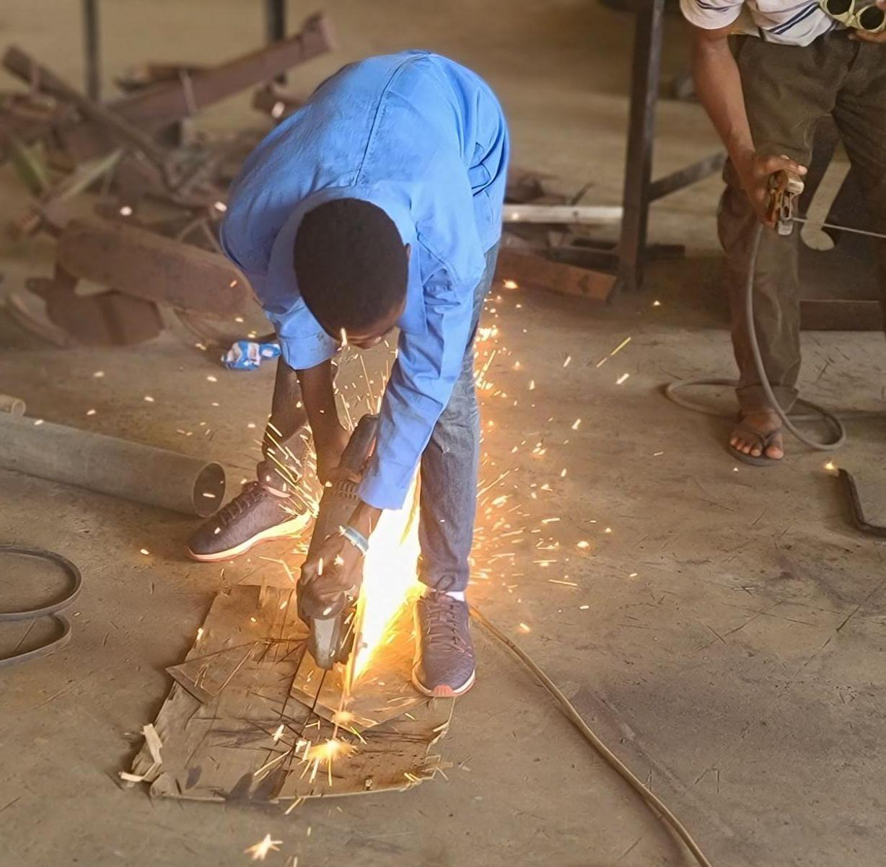
Testing Procedure
Testing evaluated the machine under different roasting or pre-treatment conditions. The reported outcomes were shelling efficiency, whole-kernel recovery, and throughput. Testing was jointly resourced by the team, with performance evaluation led by other team members.
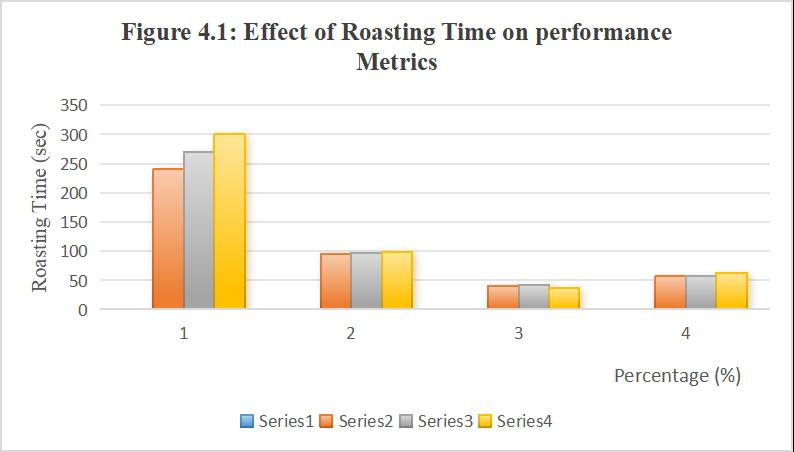
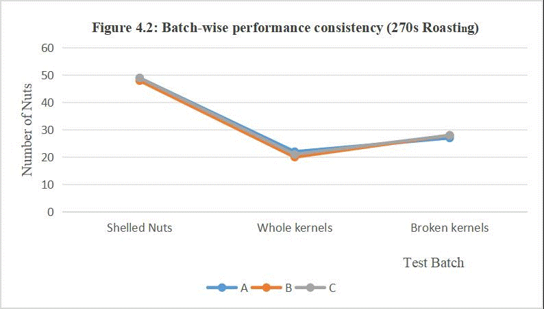
Performance Results
The project reported shelling efficiency of 95.4–98.6%, whole-kernel recovery of 36.6–42%, and throughput of 9.11 kg/hr. The ranges reflect results reported across the tested roasting or pre-treatment conditions.
Engineering Interpretation
The reported results indicate that the impact-based machine was able to crack cashew nuts at a small-scale processing rate while achieving high shelling efficiency. Kernel recovery remained lower than shelling efficiency, so cracking success and preservation of whole kernels should be treated as separate outcomes. This interpretation is specific to the project results and is not an industry benchmark or a universal performance claim.
Limitations
The available evidence does not provide a complete component inventory, detailed dimensions, full test matrix, uncertainty analysis, or independently audited performance verification. The reported figures therefore describe this project and its test conditions only; they should not be generalised to all cashew types, machines, or operating conditions.
Cost Analysis
Original thesis cost analysis: ₦898,320
This is the historical figure reported in the submitted thesis and has not been
changed or replaced.
Retrospective estimated project expenditure: approximately ₦460,000–₦500,000
- Main materials/fabrication materials: approximately ₦100,000–₦130,000
- Fabrication/workmanship: ₦96,200
- Petrol engine: approximately ₦130,000
- Electrical components: ₦25,000
- Cashew nuts used for testing: approximately ₦80,000
- Transportation: approximately ₦20,000–₦30,000
- Other/additional costs: ₦8,620
The retrospective figure is reconstructed from remembered procurement and project expenses. It is an estimate, not a verified or audited expenditure figure, and does not amend or replace the submitted academic record.
The original thesis reported a total project cost of ₦898,320 based on its cost-analysis schedule. A retrospective review of the team's remembered procurement and project expenses suggests that the actual expenditure was substantially lower. This retrospective estimate is presented for portfolio context and does not amend or replace the submitted academic record.
My Individual Contribution
In the three-person team, John's individual contribution was the structural design of the cracker. Fabrication and testing were jointly resourced, while performance evaluation was led by other team members.
Project Outcome
The project produced and tested a locally fabricated, impact-based mechanized cashew cracker for small-scale processing. Its documented outcome includes the reported operating parameters and performance values above, alongside a clear distinction between shelling efficiency and whole-kernel recovery.
Repository & Source Documentation
This portfolio page is based on the submitted thesis/project evidence supplied for the project record. The thesis itself has not been modified. No public project repository or verified machine-asset file is available in this website repository, so no repository link or image reference is included here.